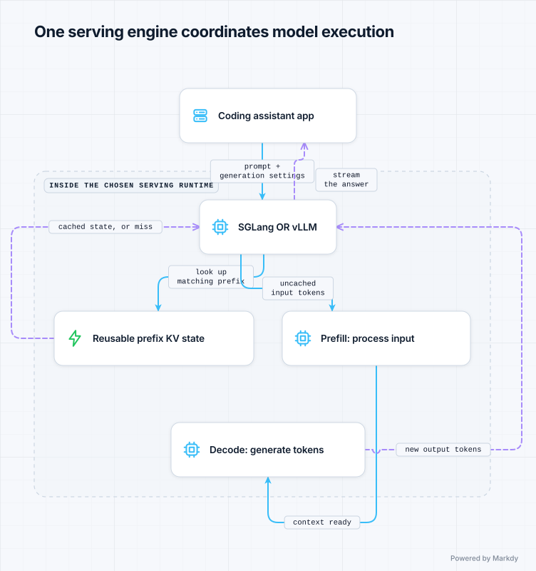
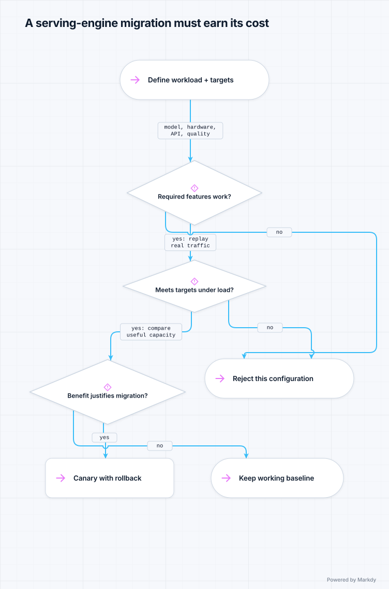

SGLang or vLLM: how would you choose?
Your model answers correctly on a laptop demo. With many users, requests wait and GPU costs rise. The next question is not “which engine is famous?” It is “where does our serving time go, and which engine meets our users' needs on our hardware?”
By the end you can…
Explain why a serving engine exists, describe the overlap between SGLang and vLLM, and defend a choice using workload evidence rather than a leaderboard.
1. Start with the simplest working system
You are building an internal coding assistant. Your application formats a prompt, loads model weights using a model library, and calls a generation function. Weights are the learned numbers that define the model. Inference means using those weights to produce an answer; you are not training a new model.
For a low-traffic experiment this can be enough. A hosted model API may also meet your needs without operating GPUs. This lesson assumes you have a reason to self-host: for example, a specific model or deployment requirement.
Now many developers ask questions at once. A naive one-request-at-a-time loop makes everyone queue. Simply starting more model processes can duplicate weights and exhaust GPU memory. You need to share GPU capacity efficiently while keeping interactive replies responsive.
2. What a serving engine actually does
SGLang and vLLM are alternative inference frameworks with serving runtimes. They sit between your application's requests and model execution on accelerators. They manage work scheduling, memory and optimized execution. They are not different language models, and switching between them is not retraining.
User → your application → SGLang OR vLLM → model execution on GPUs
prompt, tools, queues, batches, weights + computation
business logic cache, executionAn OpenAI-compatible endpoint can simplify connecting your application, but compatibility is not proof that every parameter, tool-call format or model behavior is identical. Test your actual client requests.
First, understand the two phases of a reply
- Prefill: process the input tokens, the pieces of text the model reads. A long source file or conversation makes this substantial work.
- Decode: generate new tokens step by step. Long answers can spend most of their time here.
The model stores intermediate attention information in a KV cache (key/value cache) so it does not recompute all previous attention state at each step. Think of this as working notes, not a stored final answer. The notes take memory; more active requests and longer contexts compete for that memory.
Continuous batching lets the engine update the active group of requests as others finish, rather than waiting for a whole fixed batch. Both projects support this general approach. Their implementations, kernels (optimized GPU routines), memory strategies and supported configurations affect the results.


3. Why SGLang gets discussed alongside vLLM
| Idea | What it means | What it does not prove |
|---|---|---|
| vLLM and PagedAttention | vLLM is known for organizing attention-cache memory into blocks, avoiding the need to reserve one large contiguous region per request. | Memory efficiency alone does not tell you response latency on your workload. |
| SGLang and RadixAttention | SGLang is known for organizing reusable token prefixes in a tree so requests that share a beginning can reuse cached attention state. | SGLang is not the only engine that can reuse prefixes. |
| Prefix caching in both | Both can reuse attention state for matching prompt prefixes, reducing repeated prefill work when the cache is available. | Similar meaning is not enough: the reusable prefix must match the engine's token and cache-identity requirements. |
| Modern serving stacks | Both offer broad serving optimizations and model support, with details changing by release and hardware. | A historical signature feature is not an up-to-date feature matrix or a universal winner. |
These optimizations answer different questions
“How do we store attention state efficiently?” and “Can we reuse work from an earlier request?” are related, but different. PagedAttention versus RadixAttention is not a simple either/or contest. Compare the whole serving configuration.
A concrete cache example
Request A: [shared instructions][same source file][explain function A]
Request B: [shared instructions][same source file][explain function B]
└──────── reusable prefix ─────────┘If the prefix remains cached, B may skip recomputing that shared portion. The engine still generates a fresh answer. Put a unique timestamp at the beginning of every prompt and the common prefix may disappear. Send B to a different replica without that cache and reuse may disappear too. Cache eviction under memory pressure also matters.
Prefix caching mainly helps prefill; it does not eliminate the work of generating a long answer. That is why “our prompts repeat” is a useful hypothesis, not enough evidence to choose SGLang over vLLM.
4. The senior engineer starts with a workload
This is a fictional engineering exercise, not a report about any company's internal stack. Imagine an engineer responsible for the coding assistant. The team already operates vLLM and wants to evaluate SGLang.
- Model: the same instruction-tuned model revision, tokenizer and chat template on both engines. Confirm support before running performance tests.
- Hardware: the same GPU type and count per replica, memory limits and deployment environment.
- Traffic: a representative mix of short questions, long source-file prompts and follow-up conversations. Include both shared-prefix requests and unique inputs.
- Example service targets: at an offered load of four requests per second per replica, p95 time to first token below 1.5 seconds, p95 per-request mean time per output token below 50 ms, and request errors below 0.5%.
p95 means 95% of measured requests are at or below that value. Time to first token (TTFT) includes waiting before the first output arrives. Time per output token (TPOT) describes generation pace after that first token; here we calculate a mean per request and take its p95. These definitions matter when comparing benchmark tools. Also record end-to-end completion time and streaming stalls so an average does not hide a poor experience.
5. Run a comparison that could change your mind
- Pass the compatibility gate. Verify model loading, context limits, precision, required tool calls or structured outputs, and representative answer-quality checks. A fast endpoint that breaks the app fails.
- Fix the comparison contract. Record engine/container versions, GPU and driver versions, model revision, parallelism, precision, prompt format, sampling parameters and output-length distribution. Give each engine a comparable tuning budget.
- Replay representative traffic. Use the same arrival schedule for both. Sweep from light load to saturation. A fixed-concurrency client that waits for replies can hide how much a queue grows when real arrivals continue.
- Separate cold and warm cache runs. First measure without reusable state, then with realistic reuse. Test unique prompts, bursts, cancellations, restarts and multiple replicas. Do not warm one engine and compare it with the other's cold start.
- Measure useful capacity. Record completed requests and output tokens per second, TTFT, TPOT, completion time, errors, memory use and cache reuse. Find the highest sustained load that still meets the latency and error targets.
- Repeat and operate it. Repeat runs to check variation, then use a longer soak test to expose memory growth or failures. Check metrics, upgrade and rollback procedures, and whether the on-call team can diagnose a stuck request.
A practical cost measure is GPU cost per successful request meeting the service targets, on the same input/output mix. Raw tokens per second can reward a configuration that makes users wait too long. Include the engineering cost of migration as well.
6. What would justify choosing SGLang?


Invented numbers for reasoning only — these are not measured product benchmarks. Suppose repeated warm-cache tests of the workload above produced the following results at the same four requests per second. Assume both passed the compatibility and quality checks.
| Measurement | Existing vLLM configuration | Candidate SGLang configuration |
|---|---|---|
| p95 TTFT (target < 1.5 s) | 1.8 s | 1.2 s |
| p95 per-request mean TPOT (target < 50 ms) | 38 ms | 40 ms |
| Request errors (target < 0.5%) | 0.1% | 0.1% |
Here SGLang is a promising choice because it meets all three stated targets while the current vLLM configuration misses first-token latency. It is not faster on every metric: vLLM has slightly better TPOT in this example. The conclusion concerns these configurations and this traffic, not every deployment of either engine.
The engineer investigates the cause rather than attributing the difference to RadixAttention automatically. Queueing, cache hit rate, scheduling and kernels could all contribute. They check whether tuning vLLM closes the gap, and whether SGLang's advantage survives cold caches, load variation and replica routing.
A defensible decision
“If this advantage persists under production-like conditions, canary SGLang for the coding-assistant pool. It meets our latency target on the allocated GPUs. Keep the old pool available for rollback, and expand only if real traffic meets the same quality, latency and reliability gates.”
When would the same engineer keep vLLM?
If both engines meet the targets at similar cost, the team's working vLLM dashboards, deployment pipeline and debugging experience may outweigh a small speed difference. Keep vLLM if SGLang lacks a required supported configuration or needs more operational work than the benefit warrants. Likewise, an existing healthy SGLang deployment should not migrate to vLLM just because a different benchmark favors it.
When neither is necessary: a hosted endpoint may fit your requirements and economics; a simple generation script may suffice for a small offline experiment. Self-hosted serving infrastructure should solve a demonstrated need.
Make the decision yourself
A teammate says, “Our prompts reuse documents, so choose SGLang. Its benchmark has more tokens per second.” What three questions would you ask?
Walk through an answer
- Do requests share an exact reusable prefix, and will it remain available on the replica receiving the request? vLLM also supports prefix caching.
- Was the benchmark run on our model, hardware, traffic mix and required latency? Higher throughput can come with worse waiting time.
- Does the candidate improve service-target-compliant capacity or cost enough to justify migration, while preserving required features, quality and reliability?
Sources and deeper reading
Use the documentation for the versions you deploy. Architecture explains what to investigate; measurements decide the winner for your workload.
- SGLang documentation — serving runtime, RadixAttention and supported deployments.
- vLLM documentation — serving configuration, model support and optimization.
- vLLM automatic prefix caching — reuse of shared prefixes and the distinction between prefill and decode benefits.
- Continue with the curated SGLang and vLLM learning paths.